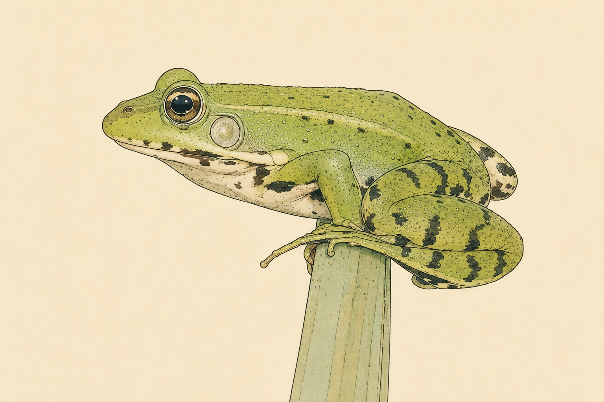

Scientific Consulting & Data Analytics for Bioinformatics, Drug Discovery and Environmental Epidemiology
GSNOOK is a scientific consulting and data analytics initiative focused on bioinformatics, biostatistics, epidemiology, One Health and the analysis of biological and genomic data.
A major area of activity is the in-depth study of genomic sequences, genome annotation and the computational exploration of genomic information. This includes the review and interpretation of gene annotations, the investigation of genomic regions and predicted genes, and the integration of biological information to support functional interpretation.
GSNOOK is particularly interested in applying bioinformatics and genomic data exploration to the identification and characterization of biomolecules with potential biomedical, veterinary and biotechnological relevance. This work is closely connected to early-stage drug discovery, where genomic information, sequence analysis and functional annotation can help identify, prioritize and investigate candidate genes, peptides and other biologically active molecules for further experimental evaluation.
In this context, computational genomics can support target identification, candidate biomolecule discovery and hypothesis generation, providing a data-driven foundation for downstream laboratory validation and translational research.
Current work includes the exploration and review of the genome annotation of Pelophylax lessonae, with particular interest in genomic information that may contribute to the discovery and characterization of biologically active molecules, including antimicrobial peptides, within a broader bioinformatics-driven drug discovery framework.
Computational exploration and review of genome annotation, with particular interest in genomic information that may contribute to the identification and characterization of biologically active molecules, including antimicrobial peptides.

This work combines sequence analysis, genome annotation, scientific data exploration and visualization, biological interpretation and reproducible computational workflows. The broader objective is to transform complex genomic and biological datasets into interpretable information that can support research and evidence-based decision making.
These activities complement GSNOOK's work in environmental epidemiology, zoonotic diseases, aquaculture health and One Health, connecting molecular and genomic information with wider animal, human and environmental health perspectives.
Technical and scientific support for research projects, documentation, data interpretation and evidence-based reporting.
Computational workflows and biological data analysis using reproducible scientific methodologies.
Bioinformatics-driven support for early-stage drug discovery, including target identification, candidate biomolecule prioritization, sequence-based exploration and the investigation of biologically active peptides and other molecules for downstream experimental validation.
Applied statistical analysis, exploratory data analysis, modeling and scientific interpretation.
Integration of environmental, animal and human health perspectives through data-driven approaches.
Analysis of environmental exposure, zoonotic risk, epidemiological patterns and population-level health indicators.
Scientific dashboards, graphical summaries and data visualization for publications, reports and communication.